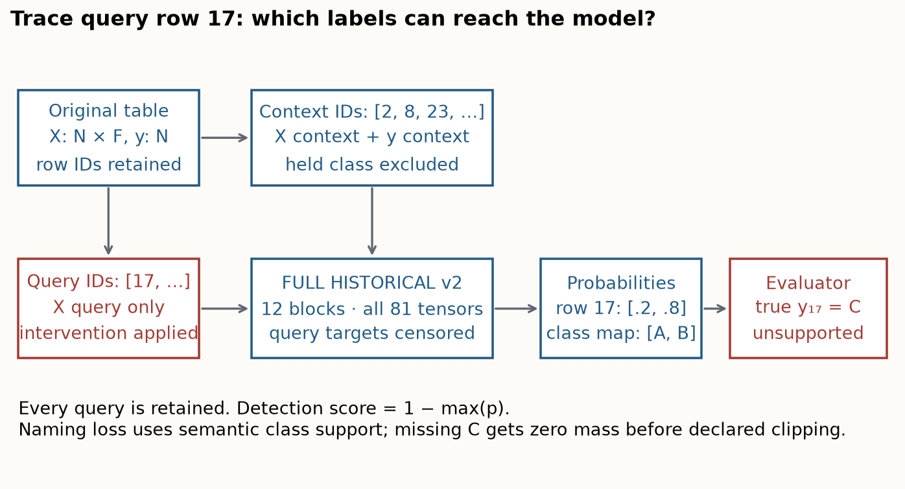
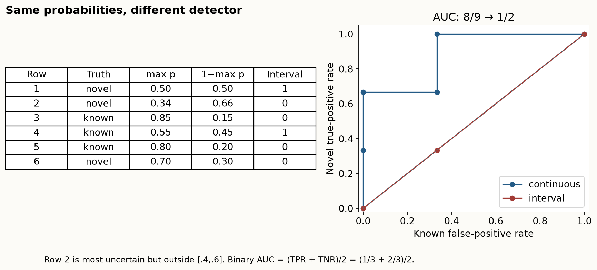
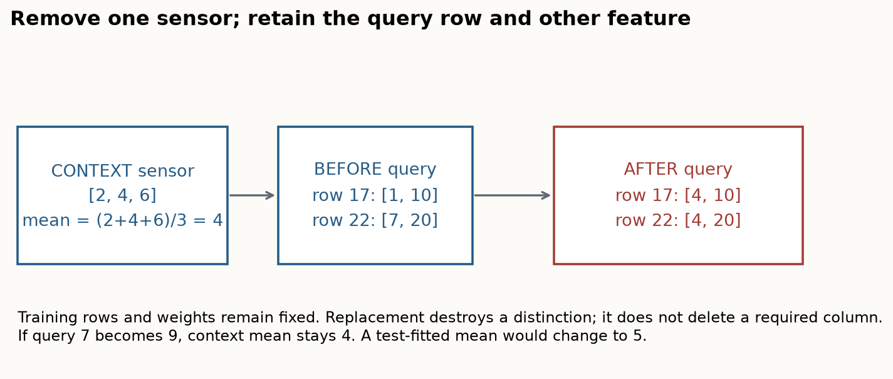
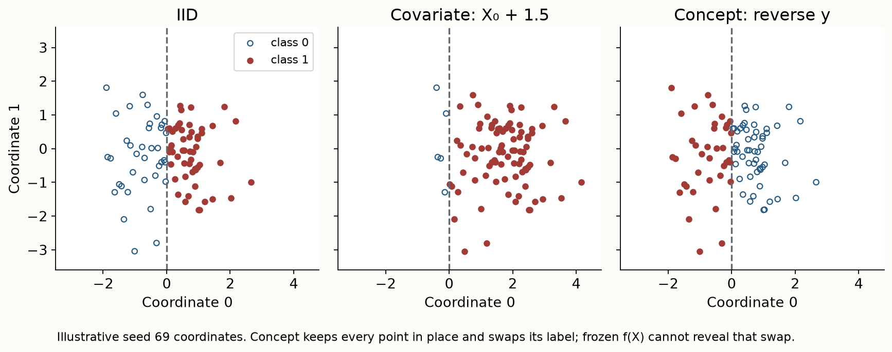
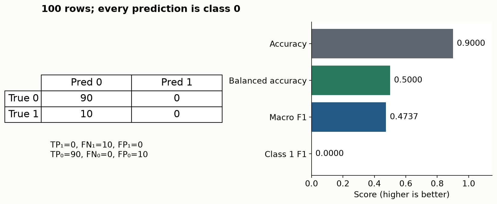
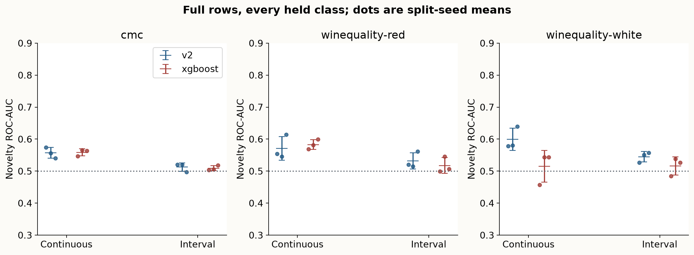
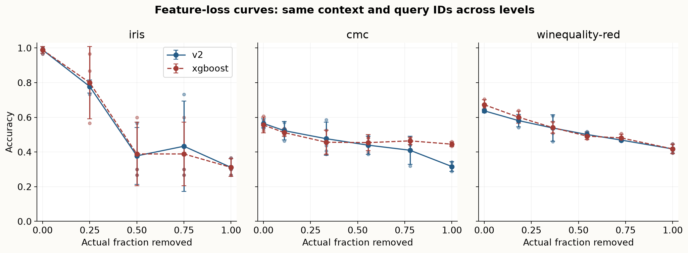

Year 2 · Quarter 3 · Lesson 069
TabPFN in open environments: measure the broken contract
Retrieve before reading
Start with the prediction contract¶
Your skill: turn an open-environment claim into a controlled experiment, then explain exactly what its score measures. By EXIT you will implement six live operations, run complete historical TabPFN v2 weights, and distinguish inability to name a new class from inability to detect an unfamiliar row. You will also test feature loss, separate changes in inputs from changes in the label rule, and interpret several objectives on the same predictions.
Before reading, write answers from memory: What does a PFN learn during pretraining? Which labels can enter its context? Why does a temporal holdout answer a different question from a random split? What must be fixed before comparing two losses? Retrieve these connections from lessons 062, 064, 066 and 068; the essential definitions are restated below.
A prediction contract says what one row represents, which columns are available when an action is taken, which labels may occur, and which errors matter. A model can return a perfectly shaped probability vector while violating that contract. A new disease category breaks label support. A disconnected sensor breaks feature availability. A changed relationship between measurements and disease breaks the conditional label rule. A new cost of a missed case changes the evaluation objective. These are different questions, even when all are called “robustness.”
The primary reading is Cheng et al., Realistic Evaluation of TabPFN v2 in Open Environments, v1, Sections 4–5 and Appendices C–H. It provides the four-axis organizing framework. Treat its conclusions as claims to examine against tables, definitions and implementation. This lesson is an evaluation lesson; it introduces no new model.
Trace the whole evaluation before interpreting a failure¶
A context is the labeled training table supplied to a pretrained PFN. Query rows have available features but unavailable labels during prediction. The pretrained weights stay fixed: constructing a new context is not gradient training. Our complete v2 implementation carries numeric values and missing-value flags through two-feature groups, feature attention and context-only row attention, repeated in twelve blocks. Its ten-output head is restricted and normalized to the classes present in the context. The original classifier therefore cannot acquire the name of an unseen class merely because its head has unused output coordinates.
The measured variant is the full historical Nature classifier: width 192, six attention heads, hidden width 768, twelve layers, 7,244,554 parameters in 81 checkpoint tensors. The checkpoint SHA starts f65a35685aeef42e3. We use one raw numeric view, model seed 0 and temperature 0.9. The historical default wrapper averages four transformed views. Matching the complete network does not make this single-view protocol identical to that wrapper. Lesson 064 derives the architecture and checks the original 2.0.9 implementation.

Trace a single query through the figure: retain its original row ID; construct context without its label; apply the declared intervention; predict on exactly those query features; map probability columns back to context labels; score every required query. Changing a denominator at the last step changes the experiment. The saved JSON preserves splits, original IDs, targets, class maps, probabilities and live code identities so the path can be reconstructed.
Important boundary: context-only attention does not imply unconditional independence of query predictions. Historical numeric preprocessing counts active variation across all supplied rows. We keep each declared query set in one call. Changing query batching can therefore change preprocessing and is a protocol change; it is not a free memory optimization.
What the released source actually certifies¶
The official repository snapshot is pinned by commit and per-file hashes. Its current README describes v2.5 and its requirements select tabpfn==6.4.1; it was released after the May 2025 v1 paper. It cannot certify which code or checkpoint produced the original tables. We retain original files under labs/sources/l069-v2 and execute isolated source fragments as independent checks.
The current newclass.py converts every feature to an integer, uses seed 42, applies a fixed confidence interval, passes the resulting binary decision to ROC-AUC and average precision, and overwrites the result for each held-out class. Its final saved value is the last class, although the paper describes averaging classes and three seeds. On Wine, integer conversion also destroys distinctions: volatile acidity .70 and .88 both become 0, while density .9978 becomes 0. These are actual first-row values in the released red-wine CSV. Our run preserves released CSV floating-point values, all class results and three actual split seeds. These corrections deliberately break whole-script parity.
The source audit verifies the parts we retain: all sixteen class partitions across CMC/red/white at seed 42, the binary scoring fragment, and all fifteen Iris feature-removal subsets. It separately records what we change. The model check compares complete logits and gradients against isolated original TabPFN 2.0.9 source; the lesson's faster CPU attention kernel changes scheduling, not the checkpoint or mathematical scale. Source primitive parity, protocol alignment and result reproduction are three different claims.
Emerging classes: naming and detecting are separate tasks¶
Suppose context labels are A and B. A query has probabilities [0.2, 0.8], but its true label is C. The classifier can choose A or B; it cannot correctly name C. This is a support failure, independent of whether its internal representation is useful. A detector might still flag the row as unfamiliar. Detection predicts “known or novel,” not the new semantic class name.
For the paper-shaped leave-one-class-out task, choose one held-out label, put every row of that label into the novel query set, and sample an equal number of rows from the remaining labels as known queries. All other known rows become context. Repeat for every label. Context and query IDs are disjoint, and their union is the full dataset. A class is an intervention within a dataset, not an independent benchmark dataset.
This balanced design fixes novel prevalence at one half. It is useful for comparing detectors under a controlled query mixture, but it is not the dataset's natural class prevalence. The companion natural-prevalence task first makes a stratified 80/20 split, removes original class 0 only from training, and scores every test row without rebalancing. Excluded training rows remain listed in the artifact. The two designs change both context size and test composition, so a score difference between them cannot be attributed solely to prevalence.
Derive what a confidence detector is measuring¶
Let p[i,c] be the probability of context class c for query i. Maximum confidence is m[i] = max_c p[i,c]. Our continuous novelty score is s[i] = 1 − m[i]: larger means less confident in any supported class. This is a diagnostic heuristic, not a calibrated probability of novelty. A familiar but ambiguous row can also have low confidence.
The source instead scores b[i] = 1{0.4 ≤ m[i] ≤ 0.6}. The lower bound matters. For three known classes, [.34,.33,.33] has lower confidence than [.50,.25,.25], yet the interval flags only the second row. An interval is not equivalent to “lower confidence means more novel.” With two known classes, maximum confidence cannot fall below 0.5; with one class a softmax detector is degenerate, which our API rejects.

Predict before changing the interval: in the six-row example, will using the interval preserve the continuous score's ordering? There are three novel and three known rows. Continuous scores correctly order eight of the nine novel–known pairs, so ROC-AUC is 8/9 = .8889. The interval produces [1,0,0,1,0,0]; its novel hit rate is 1/3 and its known rejection specificity is 2/3. For any binary score, trapezoids through (0,0), (FPR,TPR), (1,1) give AUC = (TPR + 1 − FPR)/2. Here that is .5. Both use the same underlying probabilities.
Average precision (AP) sums recall increments weighted by precision at each distinct score threshold. It differs from trapezoidal area under a precision–recall curve; the released API is average_precision_score, even though the paper calls the column AUPR. The example's continuous AP is .9167, versus .5 for the binary interval. AP's baseline depends on novel prevalence. For a constant score it equals the positive fraction, so a balanced task's .5 baseline cannot be carried into a rare-novelty task unchanged.
Keep the unsupported rows in the loss¶
For a required target outside the context class map, assign target probability zero. Ordinary log loss is then infinite: −log(0). To make a finite diagnostic, we explicitly clip each target probability below at epsilon = 10⁻¹². An unsupported row contributes −log(epsilon) = 27.6310 nats, where a nat uses the natural logarithm. This number reflects the declared clipping convention; it is not a learned estimate of open-set risk.
If two known rows have target probabilities .8 and .6, their mean loss is (.2231 + .5108)/2 = .3670. Add one unsupported row and the all-row diagnostic becomes (.2231 + .5108 + 27.6310)/3 = 9.4550. Reporting only .3670 would hide a third of the required task. Changing epsilon changes the penalty, so report epsilon and unsupported frequency beside the score.
The lab reports all-row accuracy, known-only accuracy, known-only loss, unsupported count/fraction and clipped all-row loss. In the balanced leave-one-out design, one half of queries are unsupported, so an ordinary classifier's all-row accuracy is at most one half. This is built into the task; it is not evidence that the classifier randomly forgot half its classes. Abstention would need its own coverage and accepted-risk evaluation, with thresholds fixed from appropriate validation evidence. We do not fit an abstention policy from test labels.
Feature removal: compare the same row with a declared fallback¶
A schema identifies columns by meaning and order. Simply deleting a required column makes the old input invalid. A mean-imputation fallback restores the original width, but gives the model less information: for removed numeric column j, replace every query value with the mean of context column j. Context and weights stay fixed. This corresponds to the numeric path of the released feature-shift experiment. Its categorical path uses the training mode; our measured panel has numeric input only.

In the worked example, context sensor values [2,4,6] give mean 4. Query readings 1 and 7 become 4 and 4, while a second column [10,20] remains unchanged. The sensor no longer distinguishes these two rows. Using their query mean would accidentally give 4 in this example too; change the second query from 7 to 9 and the error becomes visible. An invariant test must vary values that would distinguish the competing implementations.
The local run uses six predeclared nominal levels: 0%, 20%, 40%, 60%, 80%, 100%. For F features it removes floor(level × F) columns from one seeded random permutation. Levels are nested and use no labels. On Iris, 20% means floor(.2 × 4) = 0; the actual removed fraction is saved, so the duplicate baseline cannot masquerade as a one-feature intervention. Three seeds vary the real train/test split and the mask ordering jointly. They do not separately estimate those two variance components.
The released random/all path enumerates every subset of each size; our three nested permutations are a sampled-mask diagnostic. All fifteen nonempty Iris subsets are independently checked at the transformation level and separately measured with both complete models at seed 42. The saved control records every subset and prediction. At 50% removal the all-subset mean accuracy is .6500 for v2 and .6611 for XGBoost. This one-dataset control does not stand in for the full twelve-task feature suite; it makes mask selection inspectable. The released least/most alternatives compute feature–label correlation using the full table, including test labels, and reuse mutable frames across levels. We do not use those paths. This matters because selecting a “damaging feature” after seeing test labels changes the scientific claim.
Absolute performance and degradation answer different questions¶
For a higher-is-better metric a, an absolute change is a_shift − a_clean. Relative change is (a_shift − a_clean)/a_clean. A fall from .852 to .809 is −.043 on the unit accuracy scale (−4.3 percentage points), or −5.05% relative. The paper's Appendix F equation defines the latter; Table 2 displays numbers resembling the former. Our artifacts store both under different names. Neither is a confidence interval: the paper's “± gap” annotations must not be read as uncertainty bars.
A model beginning at .50 can decline less than one beginning at .90 while remaining worse after corruption. Always inspect both clean and shifted scores. At 100% removal every query has identical features. With our fixed deterministic recipe, predictions should become identical within a model/context call; any remaining accuracy is explained by the predicted class and test prevalence, not retained row-specific information.
Incremental features: the implemented policy aligns by training column names and ignores a newly available sensor. It can accept reordered or additional columns, and rejects missing required names until a fallback is specified. Its aligned input is exactly the baseline input; invariance here is evidence that the new information was discarded. It is not evidence that v2 learned how to use a sensor without context examples. The input equality is measured for each real feature split and retained as a negative control. On the separate Iris control, both predictors are actually called on aligned augmented inputs; the maximum probability change is exactly zero.
Distribution shift: change the law, not just the terminology¶
Write the joint distribution as p(x,y) = p(x)p(y|x). Covariate shift changes p(x) while preserving the conditional label rule p(y|x). Concept shift changes that rule. A natural temporal dataset can combine both; changed marginal features alone do not identify which mechanism explains a performance gap.
The lab constructs a controlled two-coordinate family. Source rows have independent standard-normal coordinates and label y = 1{x₀ > 0}. A covariate intervention moves query coordinate zero by +1.5 and recomputes labels using the same threshold rule. A concept intervention leaves every query feature exactly unchanged and reverses the label rule to y = 1{x₀ ≤ 0}. We retain the original query row IDs, use the same frozen context, and run both complete models. Generated tasks are labeled synthetic throughout; their seeds are not additional real datasets.

For concept reversal, the frozen predictor must return the same probabilities as on the IID query set: it receives identical context, labels and query features. Only the evaluator's labels changed. For these fixed binary predictions, the new accuracy is 1 − old_accuracy and the new AUC is 1 − old_AUC. This is an exact check on the experiment. A collapse here does not reveal a special defect of TabPFN; any unchanged accurate binary predictor must fail when its correct labels are reversed.
The paper uses feature-space distances and learned representations to help discuss shift. Here is a limitation you can derive without trusting a model ranking: if source and target have identical X, any fixed representation f(X) is also identical. A Fréchet distance computed solely from f(X) is zero even when every label reverses. Such a distance cannot by itself identify pure conditional shift. This does not invalidate the separate DISDE risk decomposition discussed in Appendix G; it prevents a feature-distance proxy from becoming proof of a changed label law.
Moving a standard-normal coordinate by 1.5 raises positive prevalence from .5 to approximately .9332 under the unchanged threshold rule. A higher covariate-shift accuracy can therefore reflect an easier class mixture. A changed label marginal alone is not proof of pure label shift, which additionally preserves the class-conditional feature distribution. The generated evidence reports realized class counts beside each score.
The original nine WhyShift/TableShift tasks are not run here. They include geographic and temporal ACS settings plus College Scorecard, BRFSS Diabetes and hospital readmission. Their row universes, domain definitions and large contexts differ from our generated control. The accompanying reproduction document records the specific missing protocol and source discrepancies. Lesson 068 supplies the sequence's distinct real temporal experiment; its evidence must not be counted again as a new 069 run.
A different objective can expose a different failure¶
The paper's fourth axis rescored predictions with several classification metrics. It does not, by itself, demonstrate adaptation to a new utility function. Here we compute all four metrics from the same unmodified real query predictions, without choosing a winning metric after the run.
Accuracy is the fraction correct. Recall for class c is the fraction of true-c rows predicted c. Balanced accuracy averages these recalls equally across classes. Precision for class c is the fraction of predicted-c rows that truly are c. The class F1 is the harmonic mean 2 × precision × recall/(precision + recall), or equivalently 2TP/(2TP+FP+FN). Macro F1 averages class F1 values equally; it is not minority-class F1. Our multiclass ROC-AUC averages one-versus-rest probability rankings equally over classes; binary AUC uses class-1 probability. Undefined values require an explicit missing status rather than zero. The declared sklearn metric adapters (F1 definition, balanced accuracy) average balanced accuracy over true classes present in that test and macro F1 over the union of true and predicted labels. An absent test class therefore needs particular care when comparing class-averaged metrics across splits; the full context class set is required for our macro OVR AUC.

Consider ninety class-0 and ten class-1 rows, with every row predicted class 0. Accuracy is .90, class-1 recall and F1 are zero, balanced accuracy is .50, and macro F1 is (180/190 + 0)/2 = .4737. A high accuracy does not prove useful minority recall. Conversely, a lower balanced accuracy than accuracy is not a statistical test of intrinsic model bias; it depends on class proportions and the confusion matrix. The paper's current source uses macro F1, while the published BRFSS accuracy .875 and F1 .044 cannot be binary macro F1 on the same predictions: binary macro F1 is at least accuracy/(1+accuracy), here .4667. To see that lower bound, write correct positive and negative fractions as u and v, with u+v=a and error fraction e=1−a. Macro F1 is u/(2u+e)+v/(2v+e). This concave expression is minimized when one of u,v is zero, giving a/(1+a). We name our averaging explicitly and do not compare incompatible targets.
For calibrated binary probability p, predicting positive has expected cost C_FP × (1−p); predicting negative costs C_FN × p. Comparing them gives the threshold p > C_FP/(C_FP+C_FN). If a false negative costs nine times a false positive, the threshold becomes .1. This derivation assumes those costs and deployment calibration; a changed cost alone does not require a new representation. A ranking can also remain perfect while probability quality differs: probabilities [.1,.9] and [.4,.6] on one negative and one positive row both give AUC 1, but mean log losses .1054 and .5108.
Changing a decision threshold can change accuracy/F1 while leaving ranking AUC unchanged. Choosing that threshold against test labels would leak the objective into evaluation. A real cost change may require validation-based calibration or decision selection; simple post-hoc metric reporting establishes neither. For relational systems, “new objective” might also mean a new prediction horizon, which changes the label itself and needs a new availability audit.
Read the fresh evidence at its actual unit of analysis¶
Before revealing the author panel, predict: will continuous confidence and the interval have the same novelty ranking? Must all feature-removal curves worsen monotonically? Must v2 outperform the fixed tree in every metric? Which generated shift should defeat both unchanged models by construction? Write one reason for each answer.
| Dataset | Arm | Continuous novelty AUC ± SD | Interval AUC ± SD | Natural novel fraction |
|---|---|---|---|---|
| cmc | v2 | 0.5568 ± 0.0168 | 0.5125 ± 0.0130 | 0.4271 |
| cmc | xgboost | 0.5587 ± 0.0107 | 0.5092 ± 0.0083 | 0.4271 |
| winequality-red | v2 | 0.5709 ± 0.0374 | 0.5322 ± 0.0251 | 0.0063 |
| winequality-red | xgboost | 0.5828 ± 0.0154 | 0.5173 ± 0.0248 | 0.0063 |
| winequality-white | v2 | 0.5992 ± 0.0349 | 0.5447 ± 0.0164 | 0.0041 |
| winequality-white | xgboost | 0.5149 ± 0.0499 | 0.5164 ± 0.0284 | 0.0041 |


The mean continuous novelty AUC gap (v2 minus XGBoost), after averaging every held class and split within each dataset, is +0.0235. The paired three-dataset bootstrap interval is [-0.0118, +0.0843] (10,000 resamples, seed 69). This is a descriptive interval over only these three dataset units, two of which are related Wine tasks; it does not establish general detector superiority. Two-arm mean ranks are v2 1.667 and XGBoost 1.333.
Clean-to-100%-removed accuracy: iris/v2 0.9889 → 0.3111; iris/xgboost 0.9889 → 0.3111; cmc/v2 0.5650 → 0.3164; cmc/xgboost 0.5559 → 0.4452; winequality-red/v2 0.6375 → 0.4177; winequality-red/xgboost 0.6729 → 0.4177. The fully removed query matrix contains no row-specific feature differences. The saved probabilities and class prevalences explain the remaining accuracy.
On the generated concept-reversal control, probabilities match the IID case and binary accuracy/AUC complement exactly within numeric tolerance. Both arms fail for the same information reason. Added-column alignment also produces exactly the baseline input; that is a control for ignoring new information, not learned feature adaptation. The source-scored interval and continuous confidence should therefore be interpreted as separate detectors, and supported-only losses remain separate from all-row clipped losses.
The measured clean-objective table below uses the same saved predictions throughout. Macro F1 averages the union of true and predicted labels; balanced accuracy averages true-present classes. These values must not be substituted for the paper's unreconciled F1 convention.
| Dataset | Arm | Accuracy | Balanced accuracy | Macro F1 | AUC (available seeds) |
|---|---|---|---|---|---|
| iris | v2 | 0.9889 | 0.9861 | 0.9873 | 0.9976 (3) |
| iris | xgboost | 0.9889 | 0.9861 | 0.9873 | 0.9945 (3) |
| cmc | v2 | 0.5650 | 0.5451 | 0.5456 | 0.7682 (3) |
| cmc | xgboost | 0.5559 | 0.5318 | 0.5335 | 0.7255 (3) |
| winequality-red | v2 | 0.6375 | 0.3308 | 0.3275 | 0.8725 (2) |
| winequality-red | xgboost | 0.6729 | 0.3887 | 0.3906 | 0.8312 (2) |
The generated conditions below report realized positive prevalence. Covariate shift preserves the threshold law but changes class composition; concept reversal changes labels while retaining identical input rows.
| Generated condition | Arm | Positive fraction | Accuracy ± SD | AUC ± SD |
|---|---|---|---|---|
| iid | v2 | 0.4714 | 0.9987 ± 0.0023 | 1.0000 ± 0.0000 |
| iid | xgboost | 0.4714 | 0.9961 ± 0.0034 | 0.9959 ± 0.0036 |
| covariate | v2 | 0.9342 | 1.0000 ± 0.0000 | 1.0000 ± 0.0000 |
| covariate | xgboost | 0.9342 | 0.9954 ± 0.0030 | 0.9976 ± 0.0016 |
| concept | v2 | 0.5286 | 0.0013 ± 0.0023 | 0.0000 ± 0.0000 |
| concept | xgboost | 0.5286 | 0.0039 ± 0.0034 | 0.0041 ± 0.0036 |
Natural-prevalence class 0-only task: every original 20% test row remains. The balanced detector table above has a different training context and test mixture; comparing them does not isolate prevalence alone. Clipped losses use epsilon 10⁻¹².
| Dataset | Arm | All-row accuracy | Known accuracy | Unsupported fraction | All-row clipped loss | Novel AP |
|---|---|---|---|---|---|---|
| cmc | v2 | 0.3672 | 0.6410 | 0.4271 | 12.1429 | 0.3969 |
| cmc | xgboost | 0.3503 | 0.6114 | 0.4271 | 12.2522 | 0.4485 |
| winequality-red | v2 | 0.6594 | 0.6635 | 0.0063 | 0.9633 | 0.1757 |
| winequality-red | xgboost | 0.6771 | 0.6813 | 0.0063 | 1.1845 | 0.0204 |
| winequality-white | v2 | 0.6694 | 0.6721 | 0.0041 | 0.9017 | 0.0229 |
| winequality-white | xgboost | 0.6619 | 0.6646 | 0.0041 | 1.0353 | 0.0926 |
The separate Iris all-subset control averages all six pairs at 50% removal (seed 42): v2 all-subset accuracy 0.6500, nested-path accuracy 0.3000 on columns [3, 2]; xgboost all-subset accuracy 0.6611, nested-path accuracy 0.3000 on columns [3, 2]; the same nominal difficulty can therefore give different scores depending on the removed subset. Source subset parity and this 32-prediction-set control are distinct from the sampled-mask main panel.
The author panel uses all 1,473 CMC rows, all 1,599 red-wine rows, all 4,898 white-wine rows and all 150 Iris rows. CMC is nine numeric-coded features and three classes; the released wine labels have six and seven classes respectively, despite Appendix E's four-level description. CMC/red/white are the novelty panel; Iris/CMC/red are the feature panel. Iris belongs to the paper's feature suite; CMC and red wine extend feature tests to source-prepared novelty datasets. These related Wine tasks are two reported dataset units, not evidence of broad domain diversity.
Red wine seed 789 contains no class-0 test row in the feature experiment. Its multiclass AUC is undefined, recorded as None; AUC means use only the two available seeds, named in the artifact, while other clean metrics retain three. No missing value is converted to zero.
Each reported real-task mean first averages held-out classes equally where relevant, then averages split seeds 42, 2023 and 789. Error bars show sample standard deviation across those three split/mask repetitions, conditional on the dataset and fixed checkpoint. They are not confidence intervals over future datasets. Paired comparisons keep the same intervention and query rows; a separate paired dataset bootstrap resamples the three dataset units. With only three related tasks, its interval is descriptive and cannot establish general model-family superiority.
The comparator is fixed XGBoost 3.3.0, 100 histogram trees, depth 6, learning rate .3, full row/column sampling and one CPU thread. There is no validation search in either arm. This is not Appendix D's five-fold tree search or 100-trial neural optimization. Two-arm average ranks are reported within each dataset. Paired dataset differences are the relevant comparison here; with only three dataset units the uncertainty remains descriptive. We do not add a comparator merely to fit a particular omnibus test.
Reconstruct a claim before accepting it¶
A paper's narrative is not stronger evidence than its table. Section 5.1 calls v2 consistently better at novelty detection, but Table 1's red-wine MLP .700 ROC-AUC and .658 AUPR exceed v2 .533 and .521. Eye Movement .511 and CMC .522 are near chance on the reported scale. They do not establish broad reliable new-class detection. Our corrected local scoring experiment is also not a reproduction of those numbers.
The broader “trees remain optimal” wording extends beyond a finite benchmark. Even inside the paper, Table 3 gives RandomForest average rank 3.93 and v2 3.53, where smaller is better; it cannot support the accompanying statement that RandomForest consistently beats v2. Neither these inconsistencies nor our local counterexamples prove that the paper's entire empirical direction is false. They require narrower, table-specific claims and reproducible operators.
For each claim, ask for: exact source location; data/split identity; estimator and wrapper identity; metric definition; aggregation unit; uncertainty; and a saved result. If any is absent, record the gap. A local code match cannot repair an unavailable historical protocol by assertion.
Connect the failure to the earlier mechanisms¶
Lesson 062 explains a prior fitted network as amortized inference over a training-task distribution. Its predictive behavior inherits that task distribution; a new deployment contract need not match it. Lesson 064 shows how complete v2 weights turn context into probabilities, including preprocessing dependence. A ten-output head does not imply ten named classes of permanent semantic meaning.
Lesson 066's scalable TabICL mechanisms address how to represent and process large tables. More feasible context does not automatically supply a missing class, interpret a new column or fix a reversed label law. Lesson 068 explicitly conditions predictions on time and changes its pretraining tasks to model drift. That is a proposed adaptation mechanism; 069 is the measurement discipline needed to establish when such a mechanism helps. Do not conclude that an architecture is robust merely because it accepts a larger or time-stamped table.
For the relational mission, name an operational example: a new merchant category, a dropped transaction attribute, a changed link between activity and fraud, or a higher cost of missing fraud. Relational neighbors might provide the missing signal, but only if their features and labels were available at prediction time. Graph structure can add useful information and additional contracts to audit; it does not excuse a weaker baseline protocol.
EXIT: explain a failure and a non-failure¶
Run the six live TODOs and their diagnostic CHECKs. The notebook displays the visible complete model and evaluation code, independently checks the source-scoring fragment and complete original network, and executes a fresh CMC/Iris panel plus the controlled shift family. Your functions determine the actual splits, masks, scores, label laws and summaries. The broader gate reruns the full author panel using your current definitions.
Submit the fresh exit-v2.json and a written explanation that identifies one failure, one negative control, one metric disagreement, the all-row denominator, and the next discriminating experiment. Explain why a continuous detector may rank novelty usefully while an ordinary classifier still cannot name the held-out class. State precisely which paper results remain unrun. The tutor will assess the reasoning; execution alone does not establish mastery.
Close the lesson and teach the prediction contract back from memory. If a calculation or implementation step is unclear, ask the teacher about that exact row, probability or control. The next lesson's model comparison should preserve this discipline: more compute is useful only when the task and evidence are still identifiable.